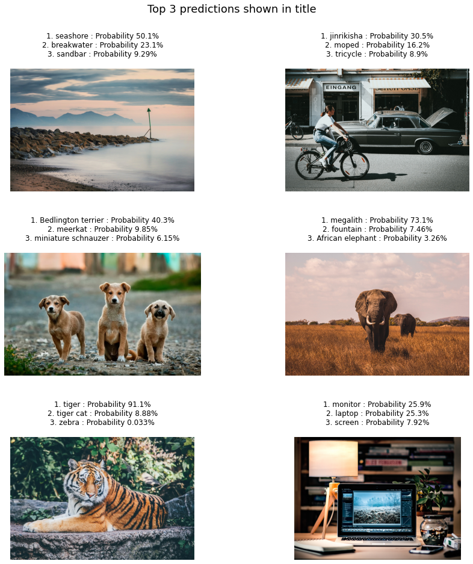

The aim of the project is to perform sentimental analysis on a given video.
A model is trained on various facial sentiments using Keras Sequential model and the results are added to a given video.

GoogleNet Caffe
In this project, I tried to identify the objects from a set of images and videos.
For this purpose, I have used the BVLC GoogleNet Caffe model, which is already pre-trained on 1000 classes, including animals and objects.
So, we don't need to train any model.